GEOG5927 Predictive Analytics
An Introduction to NetLogo
Nick Malleson and Alison Heppenstall
How to use these slides
These slides are made using html, so they need to be read on-line. You can use the arrows in the bottom-right corner to move between slides, or press the right/left arrows on your keyboard. Pressing escape gives an overview of all slides.
There are also notes for some of the slides. To see these, either print out
the slides (instructions below) or press the 's' key. This
puts you into a different mode that will show notes alongside slides.
If you would like to print them out for offline reading, or save them
as a pdf, you need to add '?print-pdf' to the end of the url, like so:
netlogo_lecture.html?print-pdf
Then you can print as normal (e.g. File -> Print). Depending on the version of your browser, you might also need to select 'landscape' paper type..
Important: printing only works using Google Chrome
Programming ...
In this unit, you will be introduced to computer proramming with NetLogo.
Don't panic!
The tasks are easy, but computers are stupid
NetLogo was designed for children - a nice introduction to programming.
Other benefits
It will change the way you think (honestly, it will)
Basically an essential skill for data analytics
Open new, exciting opportunities to research the world
Programming ...
If you are inspired to learn more...
Try: Code Academy (and their python tutorials).
And: code.org.
"The spread of computers and the Internet will put jobs in two categories: people who tell computers what to do, and people who are told by computers what to do."
Don't panic! At times you will find NetLogo programming frustrating, but there is lots of help available.
If you want to hit your computer, ask for some help first.
Outline
Software Tools / Platforms
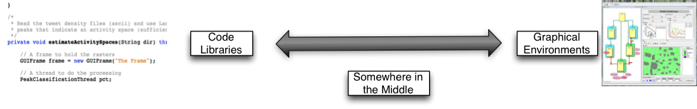What are they?
Pieces of software to help people build models
Wide range of tools
Computer code ('libraries')
Entire graphical environment
Somewhere in the middle
... and somewhere else ...
Computer code ('libraries')
Researchers write software to perform useful functions:
Draw graphs
Visualise the model
Manage the schedule
Great for programmers
Less time spend worrying about admin, more time on modelling
Computer code ('libraries')
ABM Examples:
Loads of others listed here
Others you might have heard of:
pandas (python)
plyr (R)
jQuery (javascript)
numpy (python)
. . .
Graphical Environments
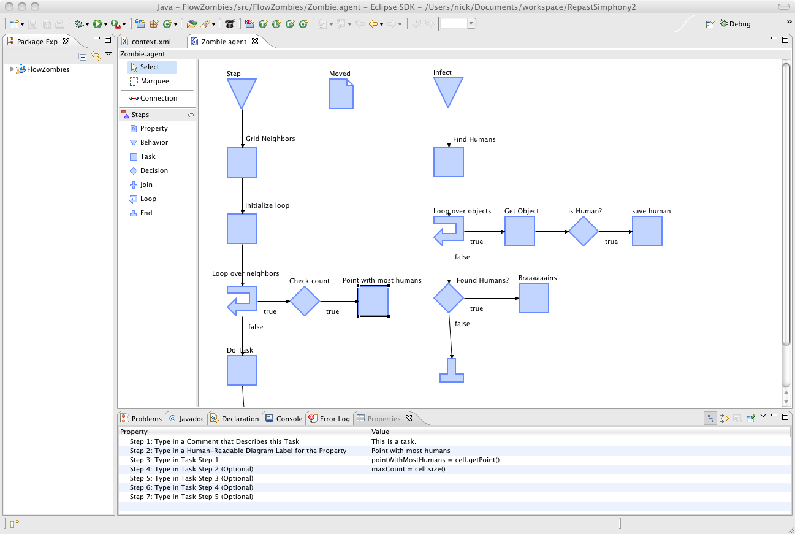Entirely visual - no programming needed
Most useful for non-programmers
Examples
Somewhere in the middle
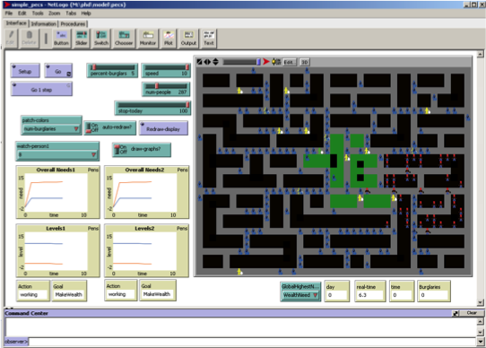Some prorams let you do a bit of code writing as well as visual development
More powerful than purely visual tools, but easier to use.
Save time having to learn to do simple tasks and concentrate on model behaviour
e.g. NetLogo
Outline

Base on Star Logo.
Popular teaching tool
Designed to be used by children
But also powerful
Developed by The Center for Connected Learning (CCL) and Computer-Based Modeling at Northwestern University
Free!
Uses Java in the background
Multi platform
Can be converted into applets (and embedded in websites)
Great for quickly putting a model together and thinking through ideas
Easy to build
Easy to interact with models
East to extract data and create plots
Excellent documentation: http://ccl.northwestern.edu/netlogo/docs/
Outline
The Program
NetLogo is "somewhere in the middle"
Graphical part (Interface) with sliders, graphs, buttons and a map
Scripting part (Procedures) which contains instructions (code)
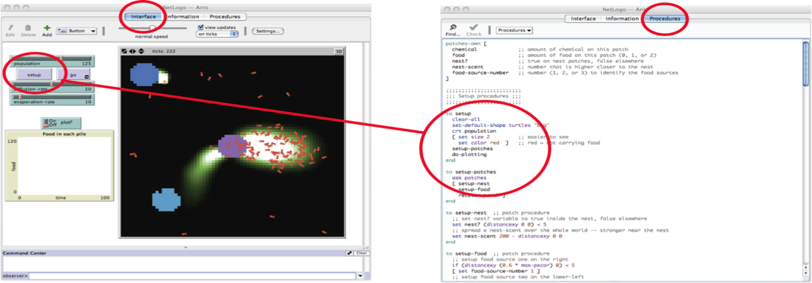The Interface
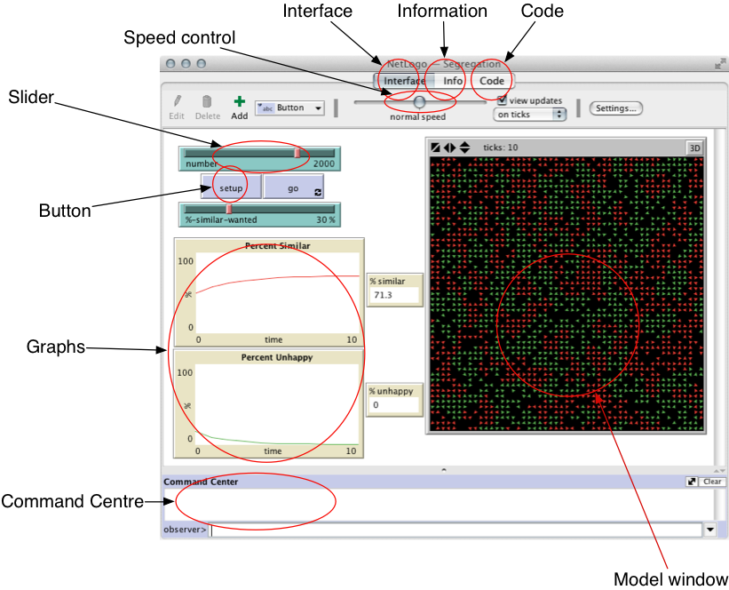Interface Components
| Switch | 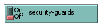 | Slider | 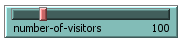 |
| Button | 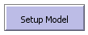 | Monitor | 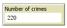 |
| Graph | 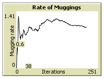 |
The Information Tab
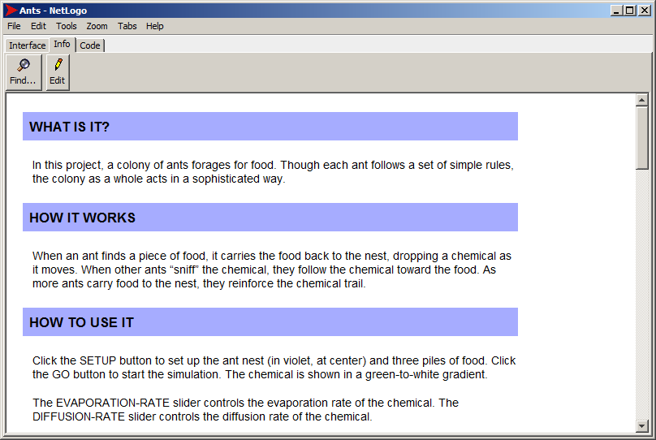The Program - Code
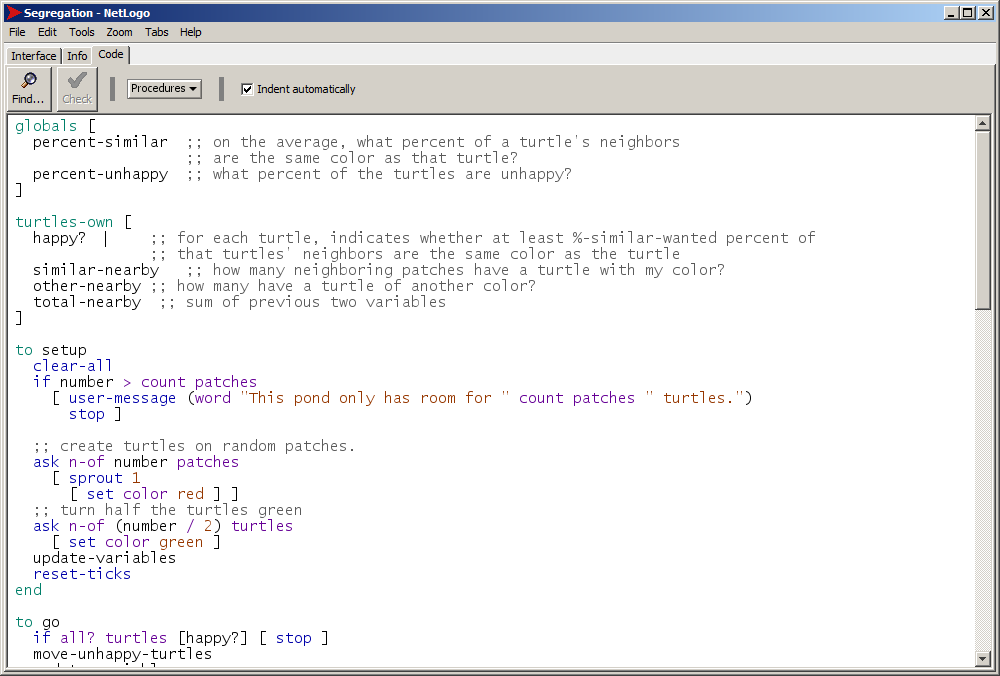Outline
Turtles, Patches and the Observer
There are two types of objects in NetLogo: turtles and patches.
Both are agents
They have rules that determine their behaviour
They can interact with other agents
Main differences:
Patches cannot move
You can create different types of 'turtle' (e.g. person, dog, cat, car, etc.)
Why turtles?
'Logo' language originally used to control robot turtles. It seems that the name 'turtle' has stuck..
Turtles, Patches and the Observer
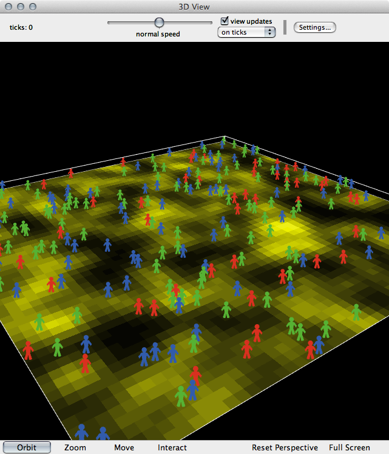Also important: the observer
The 'god' of a model
Oversea everything that happens, give orders to turtles or patches, control other things like data input/output, virtual time, etc.
Outline
Variables
In programming, variables are a way of storing information. E.g.
my-name = "Nick"
seconds-per-minute = 60
pi = 3.142
infected = True
Variables can belong to different objects in the model.
Examples:
Turtle variables: e.g. name, age,
occupation, wealth, energy
Patch variables: e.g. height-above-sea,
amount-of-grain, building-security,
deprivation
Observer variables:total-wealth, weather,
time-of-daypi
Different objects can have different variable values
Built-In Variables in NetLogo

NetLogo Commands
Commands are the way of telling NetLogo what we want it to do
Some examples
(don't worry, these will be explained properly in the first practical):
show "Hello World" | Prints something to the screen |
set my-age 13 | Sets the value of a variable |
ask turtles [ ... ] | Ask the turtles to do something |
ask turtles [ set color blue ] |
Asks the turtles to turn blue |
Commands are very well documented
Brackets
NetLogo uses both square [ ] and round ( ) brackets.
Round brackets are used to set the order of operations. E.g.:
2 + 3 × 4 = 14
(2 + 3) × 4 = 20
Square brackets are used to split up commands. E.g.:
ask turtles [ ... ]
the ask command
expects to find some more commands inside the brackets.
Contexts

Contexts are NetLogo's way of controlling where commands are sent.
There are three contexts:
- Observer
- Turtle
- Patch
Don't Panic: Lots of opportunity to understand these during the practicals..
Outline
Flow Control
Programs are recipes
And computers are really, really stupid cooks.
Programmers need to tell the computer exactly what to do, and in what order
Geek joke:
Q: How do you keep a programmer in the shower forever?
A: Give them a bottle of shampoo that says "lather, rinse, repeat".
Flow Control and Logic
Usually, NetLogo will run through your code, one line after the other.
But! Sometimes there are two or more possibilities for what to do next.
if statements are one example:
... start here ...
if ( age < 18 )
[ .. do something .. ]
if ( age > 18 )
[ .. do something else .. ]
... now continue ...
Outline
Finally: Writing Nice Code
Computers don't care what code looks like
But there are some good conventions that we can use to make our code easier to understand by humans
Indentation
New blocks of code should be indented (moved to the right)
E.g. the if statements on previous slide
White space
Different sections of code can be separated by lots of white space
Comments
Comments are special parts of code that NetLogo will ignore.
Anything after a ; is ignored.
Use comments to explain what your computer code does.
Indentation
Good
if age = 15 [
if count friends > 0 [
set happiness ( happiness + 1 )
]
if count friends > 5 [
set happiness ( happiness + 5 )
]
]
Bad
if age = 15 [
if count friends > 0 [
set happiness ( happiness + 1 )
]
if count friends > 5 [
set happiness ( happiness + 5 )
]
]
Whitespace
Good
if age = 15 [
if count friends > 0 [
set happiness ( happiness + 1 )
]
if count friends > 5 [
set happiness ( happiness + 5 )
]
]
Bad (well, not too bad, but ..)
if age = 15 [
if count friends > 0 [
set happiness ( happiness + 1 )
]
if count friends > 5 [
set happiness ( happiness + 5 )
]
]
Comments
Good
if age = 15 [
; This happens if the agent is 15 years old:
if count friends > 0 [
; If at least 1 friend, then they're happy
set happiness ( happiness + 1 )
]
if count friends > 5 [
; If they have 5, then even more happy
set happiness ( happiness + 5 )
]
]
Bad
if age = 15 [
if count friends > 0 [
set happiness ( happiness + 1 )
]
if count friends > 5 [
set happiness ( happiness + 5 )
]
]